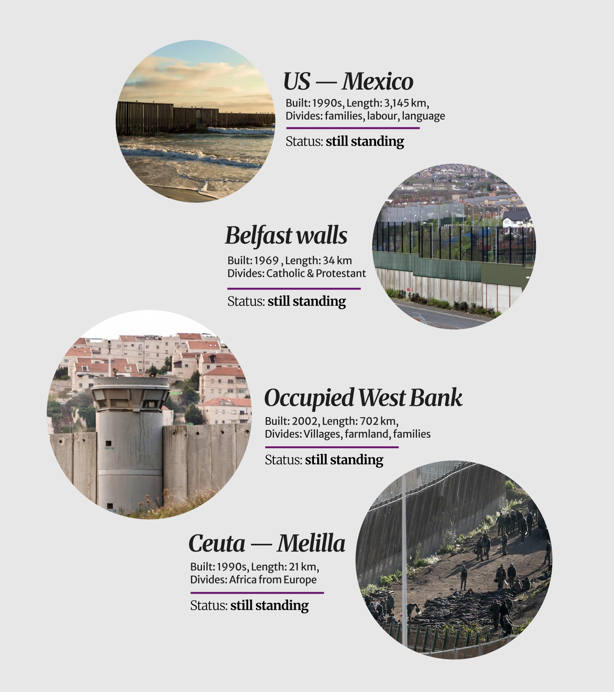
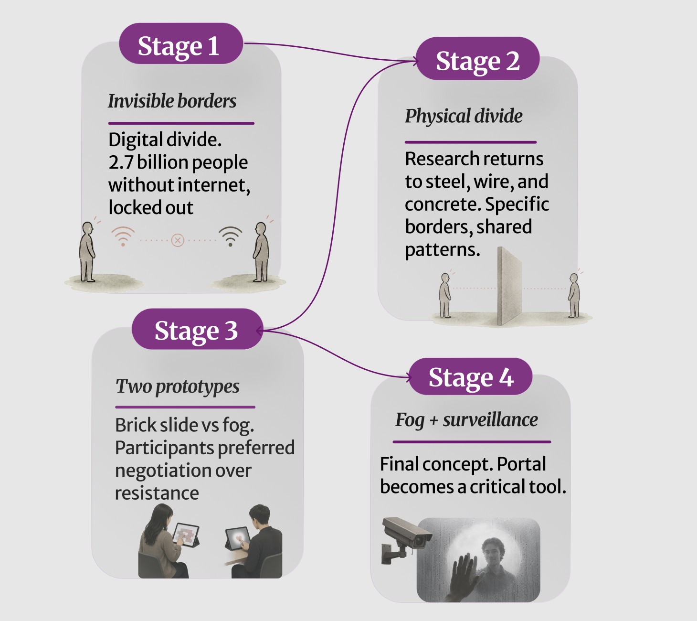
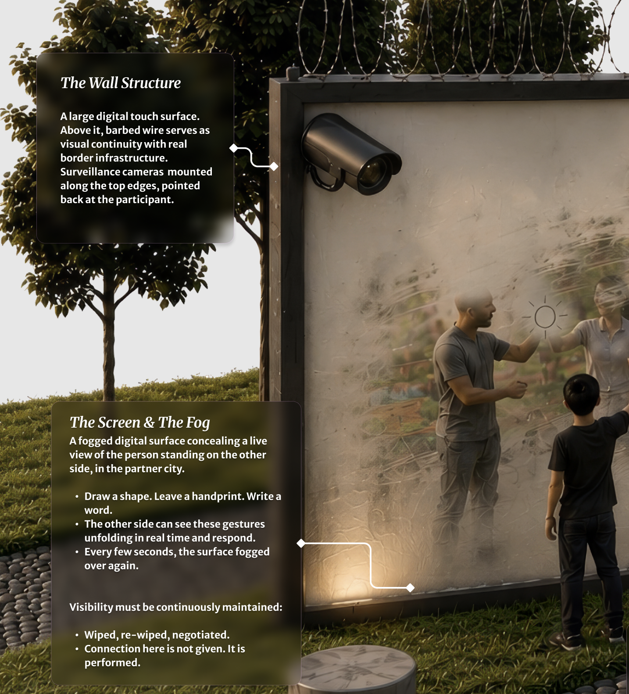
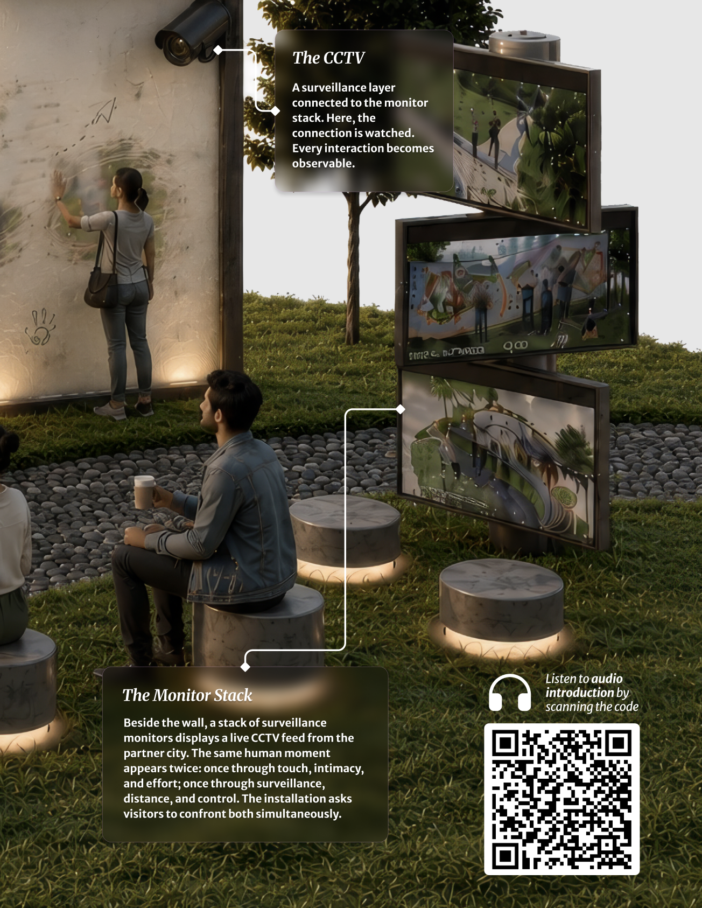
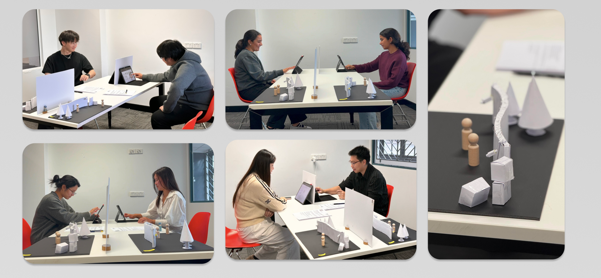
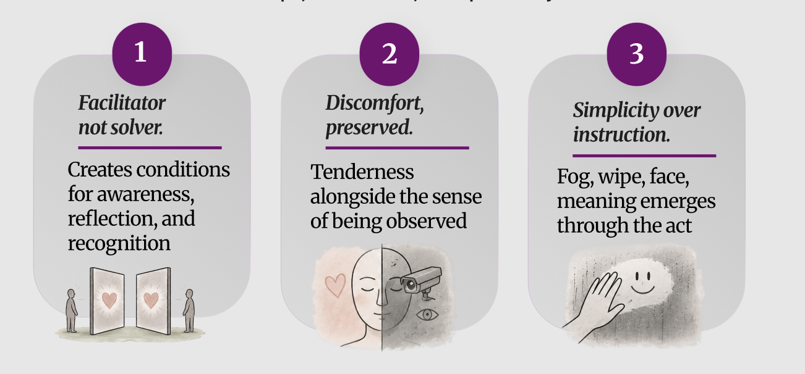

01 / Separation
Physical barriers become social narratives.
Walls do not only divide land. They influence how communities remember conflict, identity and the people beyond the divide.
Project 02 · Experience Design · Interactive Installation
A travelling public installation that makes the emotional distance of a border briefly visible, negotiable, and human again.

01 — The Problem
We began by looking at borders as physical systems: walls, checkpoints, fences and surveillance. From the US–Mexico border to the Belfast Peace Walls, the occupied West Bank and Ceuta–Melilla, each site was geographically different but structurally familiar.
The deeper problem was psychological. Distance becomes normalised. Communities learn who belongs, who does not, and eventually stop imagining the person on the other side. The project therefore moved away from trying to “solve” borders and toward making that emotional distance perceptible.
“Sadness. When I see that wall, I automatically see a divide.”Participant from the Republic of Ireland, speaking about the Belfast Walls
02 — Research
01 / Separation
Walls do not only divide land. They influence how communities remember conflict, identity and the people beyond the divide.
02 / Surfaces
Murals, protest messages and peace statements turn border surfaces into contested public memory rather than neutral infrastructure.
03 / Negotiation
The research repeatedly pointed toward a softer interaction: not breaking through a wall, but creating a brief, fragile opening within it.

Suggested image: case-study research on the US–Mexico border, Belfast Walls, West Bank and Ceuta–Melilla.
03 — The Reframe
How can design remove borders?
How can design temporarily interrupt the emotional distance borders create?
The reframing changed the project from a solutionist proposition into a public encounter. The installation would not pretend to repair political conflict; it would create conditions for awareness, reflection and recognition.
The interaction also needed to be immediate. A passer-by should understand what to do within seconds — without tutorials or explanatory steps. The wall itself had to invite behaviour.
04 — Concept Evolution
01 / Invisible borders
Early research explored invisible systems of exclusion, including access to the internet, education, healthcare and finance. But the research repeatedly returned to walls, steel, wire and concrete.
02 / Specific walls
Rather than design for a single geography, we followed the patterns shared across the US–Mexico border, Belfast and the West Bank and shifted toward an installation that could exist between any two places divided by a wall.
03 / Two prototypes
We tested obstruction against temporary visibility. Participants consistently preferred the fog interaction because it felt negotiable and human rather than simply adversarial.
04 / Critical layer
Adding CCTV transformed a tender connection into something watched and fragile. The concept became less about romance across a wall and more about the infrastructure of separation itself.

Suggested image: Stage 1–4 concept evolution from the final board.
05 — Interaction
From a distance: wire, cameras, a wall.
Closer now. The surface is fogged. Someone is there.
Clear a patch. A face appears. The other person responds.
Beside the wall, monitors reveal that the same moment is being watched.
The wall remains — but the participant has briefly seen through it.

Fog / wipe interaction: visibility must be continuously maintained.

CCTV and monitor stack: the intimate connection is simultaneously observed.
06 — User Testing
We tested a physical mock-up using two cities, two iPads and a partition. Eight participants included both acquaintances and complete strangers. We observed hesitation, collaboration and how long people waited before initiating interaction.
The strongest behavioural difference was social. Acquaintances interacted quickly and playfully because trust already existed. Strangers were more cautious and tended to wait to see what the person on the other side would do first.
Existing trust allowed the interaction to begin quickly and become playful.
Participants waited, watched and negotiated the first move — reinforcing the project's focus on hesitation and fragile connection.

Suggested image: cardboard / divider / iPad testing setup and participant observation photos.
07 — Final Installation

Final travelling outdoor installation render.
A large digital touch surface topped with barbed wire and surveillance cameras, visually continuous with real border infrastructure.
A live view of the person in the partner city is concealed. Participants wipe, draw, leave handprints or write words; the surface fogs over again every few seconds.
A monitor stack shows a live surveillance feed. The same moment appears once through intimacy and effort, and again through distance and control.
Collaborative project by The Overthinkers — Sara Alasfar, Adinata Harlan, Rhesa Utomo, Karina Zhu and Lina Alawieah. Group contribution agreement: 20% per member.
08 — Reflection
The most important shift was conceptual: from removing a wall to designing a temporary interruption within it. That change made the installation more honest about the limits of design and more precise about what an interaction could actually do.
It also changed how I think about critical experience design. The most meaningful interaction was not the most spectacular one. It was the one that made people hesitate, act, notice the surveillance around them, and leave with a slightly different awareness of the person beyond the divide.
Next project